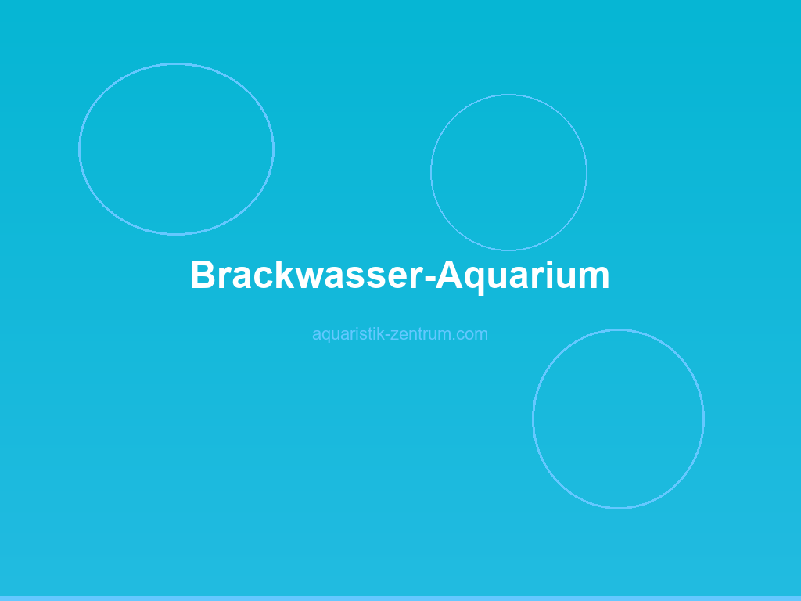

Brackwasser-Aquarium einrichten: Salz, Technik, Besatz und Pflege im Praxis-Guide
Brackwasser-Aquaristik ist das spannende Bindeglied zwischen Süß- und Meerwasseraquaristik. Wer genug vom „08/15-Becken" hat und sich für Mangrovenbiotope, Flussmündungen oder die Ostsee-Fauna begeistert, findet hier ein faszinierendes Hobby mit einer enormen Vielfalt an Fischarten, Garnelen und Krebsen. Viele der robusten, farbenprächtigen Brackwasserbewohner sind zudem deutlich einfacher zu pflegen als empfindliche Riffbewohner – perfekt also für alle, die Meerwasseraquaristik „light" betreiben wollen.
In diesem umfassenden Guide erfährst du, was Brackwasser genau ist, wie du den Salzgehalt korrekt misst und einstellst, welche Technik wirklich nötig ist, welche Tiere und Pflanzen sich eignen und wie du typische Anfängerfehler vermeidest. Mit über 2.000 Worten decken wir alles ab, was du für ein funktionierendes Brackwasser-Becken wissen musst – vom 60-Liter-Nano bis zum 300-Liter-Schauaquarium.
Wichtig vorab: Brackwasser ist kein Kompromiss und kein „halbes Salzwasser". Es ist ein eigenständiges Biotop mit eigenen Gesetzen. Wer die Grundregeln versteht und konsequent anwendet, wird mit einem stabilen, farbenfrohen und langfristig pflegeleichten Aquarium belohnt.

1. Was Brackwasser ist
Brackwasser ist eine Mischung aus Süß- und Salzwasser, wie sie in der Natur überall dort vorkommt, wo Flüsse ins Meer münden. Der Salzgehalt liegt definitionsgemäß zwischen 0,5 und 30 PSU (Practical Salinity Units) – reines Süßwasser hat 0 PSU, die offene See etwa 35 PSU. Für die Haltung im Aquarium verwenden wir meist Werte zwischen 5 und 18 PSU, was etwa 4–12 Gramm Meersalz pro Liter entspricht.
Die bekanntesten Brackwasserregionen der Erde sind Mangrovenwälder (z. B. Thailand, Indonesien, Belize), Flussmündungen (Ästuarien wie Elbmündung, Amazonas-Delta) und Brackwasserseen (z. B. Ostsee, Schwarzes Meer, Kaspisches Meer). Genau diese Lebensräume imitieren wir im Aquarium.
Was Brackwasser für die Aquaristik so reizvoll macht, ist die enorme Anpassungsfähigkeit vieler Arten. Brackwasserfische sind in der Evolution ständig schwankenden Salzgehalten ausgesetzt – das macht sie robust, tolerant und häufig auch für Einsteiger gut geeignet. Zugleich sind viele dieser Arten farbenprächtig und verhaltensinteressant: Bumblebee Gobies graben sich in den Sand, Schlammspringer klettern an die Wasseroberfläche, und Argusfische jagen mit majestätischer Ruhe.
Merke: Brackwasser ist kein Notbehelf, weil dein Leitungswasser zu hart ist. Es ist ein bewusst gewählter Lebensraum, der eigene Planung erfordert – von der Auswahl des Salzes bis zur Vergesellschaftung der Tiere.
2. Salzgehalt messen
Das Herzstück der Brackwasseraquaristik ist die exakte Messung und Einstellung des Salzgehalts. Drei Methoden haben sich bewährt:
Aräometer (Spindel)
Eine Glashohlspindel, die du in einen Messzylinder mit Aquarienwasser gleiten lässt. Anhand der Eintauchtiefe liest du die Dichte ab. Für Brackwasser eignet sich ein Aräometer mit Skala 1.000 bis 1.025 g/ml. Genaue Modelle kosten 15–25 € und reichen für die meisten Anwendungen völlig aus. Ein Zielwert für die meisten Brackwasserfische liegt bei 1.005–1.010 (entspricht 8–12 PSU).
Refraktometer
Deutlich präziser (und teurer) ist ein optisches Refraktometer, das über die Lichtbrechung den Salzgehalt misst. Für 30–60 € bekommst du ein solides Modell. Vorteil: Du brauchst nur wenige Tropfen Wasser, und die Ablesung erfolgt sekundenschnell. Für den professionellen Einsatz und bei empfindlichen Arten klare Empfehlung.
Leitfähigkeitsmessgerät (TDS-/EC-Meter)
Moderne digitale Messgeräte zeigen die elektrische Leitfähigkeit in Mikrosiemens (µS/cm) oder TDS (Total Dissolved Solids) an. Ein gutes Gerät schlägt mit 25–50 € zu Buche, liefert dafür reproduzierbare Ergebnisse. Brackwasser liegt je nach Salzgehalt zwischen 8.000 und 25.000 µS/cm.
| Methode | Preis | Genauigkeit | Empfehlung |
|---|---|---|---|
| Aräometer | 15–25 € | ±0,002 g/ml | Einsteiger, einfache Becken |
| Refraktometer | 30–60 € | ±0,001 g/ml | Fortgeschrittene, empfindliche Arten |
| Leitfähigkeitsmessgerät | 25–50 € | ±1 % | Profis, tägliche Kontrolle |
Merke: Messe den Salzgehalt immer bei konstanter Wassertemperatur (am besten 25 °C), da Dichte und Leitfähigkeit temperaturabhängig sind. Die meisten Aräometer sind auf 25 °C oder 20 °C kalibriert – lies die Anleitung.
🛒 Aräometer und Meersalz — Salzgehalt im Brackwasser sicher einstellen
Ein präzises Aräometer und ein hochwertiges Meersalz ohne Jod sind die wichtigsten Grundausstattungen für dein Brackwasser-Becken. Damit misst und dosierst du den Salzgehalt zuverlässig.
👉 Brackwasser-Set bei Amazon ansehen3. Technik und Einrichtung
Die Technik im Brackwasser-Aquarium unterscheidet sich nur in Details von der Süßwasseraquaristik. Salz ist korrosiv, daher solltest du bei einigen Komponenten genauer hinschauen.
Beckengröße
Für die meisten Brackwasserfische empfehlen wir ab 100–200 Litern mit mindestens 60 cm Kantenlänge. Viele beliebte Arten wie Argusfische oder größere Grundeln brauchen Schwimmraum und Bodenfläche. Ein 200-Liter-Becken (100×40×50 cm) ist ein guter Kompromiss aus Pflegeleichtigkeit und Artenvielfalt.
Filter
Ein leistungsstarker Außenfilter mit Filterschaum und Keramikröhrchen ist die beste Wahl. Die Filterleistung sollte das 3- bis 5-fache Beckenvolumen pro Stunde betragen. Wichtig: Achte darauf, dass im Filter kein Kupfer verbaut ist – Kupferionen sind für viele Wirbellose und empfindliche Fische tödlich. Die meisten modernen Markenfilter (Eheim, Fluval, Oase) sind kupferfrei.
Heizung
Brackwasserfische stammen aus tropischen Regionen und benötigen 24–28 °C. Ein herkömmlicher 200-Watt-Heizstab reicht für ein 200-Liter-Becken. Auch hier auf Kupferfreiheit achten – Edelstahlheizstäbe sind eine gute Alternative.
Beleuchtung
Da viele Brackwasserpflanzen robust und lichthungrig sind, reicht eine LED-Beleuchtung mit 0,3–0,5 Watt pro Liter. Beleuchtungsdauer 8–10 Stunden täglich.
Bodengrund
Sand oder feiner Kies (1–3 mm Körnung) eignen sich hervorragend. Viele Brackwasserfische wie Schlammspringer und Bumblebee Gobies graben gerne. Wichtig: Keinen Soil verwenden – Soil senkt den pH-Wert und reichert das Wasser mit Huminstoffen an, was den Salzgehalt verfälscht und die gewünschten stabilen pH-Werte zwischen 7,5 und 8,5 stört.
Dekoration
- Mangrovenwurzeln – Geben Gerbstoffe ab, wirken antibakteriell, sehen natürlich aus
- Lavagestein – Bietet Verstecke, hat eine raue Oberfläche für Biofilm
- Kokosnusshöhlen – Perfekte Verstecke für Grundeln und Krebse
- Lochgestein – Sieht aus wie ein kleines Riff, ohne aufwendig zu sein
4. Geeignete Tiere
Die Auswahl an Brackwasserfischen ist überraschend groß. Wichtig: Mische keine reinen Süßwasserarten mit Brackwasserbewohnern, da die Salzverträglichkeit stark variiert. Halte dich konsequent an Arten, die natürlich in Brackwasserbiotopen vorkommen.
Bumblebee Goby (Brachygobius doriae)
Ein 5–6 cm kleiner, gelb-schwarz gestreifter Grundel, der perfekt für 60–100-Liter-Becken passt. Bumblebee Gobies sind revierbildend und brauchen Verstecke. Sie bevorzugen 8–15 PSU Salzgehalt. Fütterung: Lebend- oder Frostfutter (Mückenlarven, Artemia).
Schlammspringer (Periophthalmus spp.)
Faszinierende amphibisch lebende Fische, die im Aquarium Landteile brauchen. Sie klettern gern auf Mangrovenwurzeln und verbringen Stunden außerhalb des Wassers. Mindestens 200 Liter und ein Paludarium-Setup sind Pflicht.
Molly (Poecilia sp.) – Brackwasserformen
Nicht alle Mollys vertragen Salz – Wildformen aus Mangroven schon. Achte beim Kauf auf „Brackwasser-Mollys" oder kaufe direkt bei Züchtern, die ihre Tiere in Salzwasser halten. 5–10 PSU sind ideal. Achtung: Handelsübliche Black-Mollys aus dem Zoohandel sind oft auf Süßwasser geprägt und vertragen Salz nur bedingt.
Argusfisch (Scatophagus argus)
Bis zu 30 cm großer, scheibenförmiger Fisch mit charakteristischer Punktzeichnung. Er braucht viel Platz (mindestens 400 Liter), ist dafür aber ein echter Hingucker. Jungtiere vertragen Brackwasser, adulte Tiere bevorzugen 15–20 PSU.
Garnelen (Caridina cf. nilotica)
Kleine, algenfressende Brackwassergarnelen, die in Schwärmen leben. Sie vertragen Salzgehalte von 5–20 PSU und sind eine ideale Ergänzung zu friedlichen Fischen.
Schwertträger und Platys
Robuste Lebendgebärende, die geringe Salzmengen (bis 5 PSU) vertragen. Eher für die untere Brackwassergrenze geeignet, aber eine gute Wahl für Einsteiger.
| Fischart | Endgröße | Idealer Salzgehalt | Beckengröße | Schwierigkeit |
|---|---|---|---|---|
| Bumblebee Goby | 5–6 cm | 8–15 PSU | ab 60 L | Mittel |
| Schlammspringer | 10–15 cm | 5–15 PSU | ab 200 L | Hoch |
| Brackwasser-Molly | 6–10 cm | 5–10 PSU | ab 100 L | Einfach |
| Argusfisch | 25–30 cm | 10–20 PSU | ab 400 L | Mittel |
| Brackwassergarnele | 2–3 cm | 5–20 PSU | ab 40 L | Einfach |
| Schwertträger | 8–12 cm | 0–5 PSU | ab 100 L | Einfach |
Merke: Informiere dich vor dem Kauf genau, ob die Tiere aus Brackwasser-Haltung stammen. Viele Zierfische werden über Generationen in Süßwasser gezogen und vertragen Salz nur schlecht. Frage im Fachhandel gezielt nach Wildfängen oder Brackwasser-Zuchtlinien.
5. Pflanzen und Hardscape
Echte Brackwasserpflanzen sind selten im Handel. Die meisten Pflanzen, die wir kennen, stammen aus reinem Süßwasser. Es gibt aber eine Reihe robuster Arten, die geringe Salzmengen vertragen und sich deshalb für Brackwasser-Becken eignen.
Geeignete Pflanzen
- Javafarn (Microsorum pteropus) – Verträgt bis 10 PSU, extrem robust
- Anubias (Anubias barteri) – Verträgt bis 8 PSU, wächst langsam
- Cryptocoryne – Verschiedene Arten vertragen 5–10 PSU
- Javamoos (Taxiphyllum barbieri) – Robust, auch in leicht brackigem Wasser
- Hornkraut (Ceratophyllum demersum) – Bindet Nitrat, wächst schnell
Bei Salzgehalten über 15 PSU wachsen die meisten Pflanzen kaum noch oder sterben ab. Wer ein biotopnahes Brackwasser-Becken möchte, setzt daher auf Hardscape statt Bepflanzung: Mangrovenwurzeln, Lavagestein und Sand schaffen eine natürliche Mangroven-Ästhetik, auch ohne viele Pflanzen.
Hardscape-Tipps
Verwende viele Höhlen und Spalten – Brackwasserfische sind oft Höhlenbewohner. Eine Rückwand aus Lochgestein bildet ein „Mini-Riff" und bietet Reviere für jeden Fisch. Mangrovenwurzeln sollten vor dem Einsatz mehrere Tage gewässert werden, um die Gerbstoffe auszulaugen, die sonst das Wasser bräunlich färben.
6. Wasserwechsel
Der Wasserwechsel im Brackwasser-Aquarium folgt klaren Regeln. Anders als im Süßwasser musst du das Wechselwasser vorher aufsalzen – und zwar auf den exakt gleichen Salzgehalt wie im Becken.
Schritt-für-Schritt-Anleitung
- Leitungswasser in Eimer füllen und auf Aquarientemperatur bringen (24–26 °C)
- Meersalz zugeben – Faustregel: 7–10 g pro Liter für 8–12 PSU. Markensalze wie Tropic Marin oder Red Sea haben Dosieranleitungen.
- Gut umrühren und mindestens 30 Minuten warten, bis sich das Salz vollständig gelöst hat
- Salzgehalt mit Aräometer prüfen und ggf. korrigieren
- Optional: Wasseraufbereiter zugeben, um Chlor und Schwermetalle zu binden
- Langsam eingießen – Temperaturschock vermeiden
Häufigkeit und Menge
Ein wöchentlicher Wasserwechsel von 20–30 % hat sich bewährt. Bei hohem Besatz oder starkem Fütterungsaufkommen (z. B. Argusfische) kannst du auf 30 % zweimal pro Woche erhöhen. Das gewechselte Wasser sollte immer den gleichen Salzgehalt wie das Beckenwasser haben.
Merke: Mische das Aufsalzwasser immer frisch am Vortag. Salz braucht Zeit, um sich vollständig zu lösen und die Mineralien gleichmäßig zu verteilen. „Eilig" ver salzenes Wasser führt zu Konzentrationsunterschieden und kann Fische stressen.
7. Fehler vermeiden
Brackwasseraquaristik ist einfacher als oft angenommen – wenn man die häufigsten Fehler kennt und vermeidet. Hier die Top-Stolperfallen:
Speisesalz verwenden
Der Klassiker unter den Anfängerfehlern. Speisesalz enthält Jod, Rieselhilfen und andere Zusätze, die für Fische und Pflanzen schädlich sind. Verwende ausschließlich Meersalz aus dem Aquaristik-Fachhandel (Tropic Marin, Red Sea, Sera, JBL). Kosten: 5–10 € pro kg, davon brauchst du etwa 1–1,5 kg pro 100 Liter bei 10 PSU.
Zu schneller Salzgehalt-Wechsel
Brackwasserfische vertragen Salz, aber nicht plötzliche Schwankungen. Eine Änderung von mehr als 2–3 PSU pro Tag stresst die Tiere und kann zum Tod führen. Neue Fische immer langsam mit der Tröpfelmethode an den Beckensalzgehalt gewöhnen.
Kupfer im Filter oder Heizstab
Salzwasser leitet Strom und Korrosion schneller als Süßwasser. Kupferionen, die in minderwertigen Komponenten enthalten sind, lösen sich und sind für Garnelen und empfindliche Fische tödlich. Setze auf kupferfreie Komponenten von Markenherstellern.
Soil als Bodengrund
Soil senkt den pH-Wert und reichert das Wasser mit Huminstoffen an – ungünstig für die meisten Brackwasserfische, die einen pH zwischen 7,5 und 8,5 bevorzugen. Verwende Sand oder feinen Kies.
Falsche Vergesellschaftung
Nicht jeder Fisch, der „Salz verträgt", passt zu jedem anderen. Achte auf ähnliche Ansprüche an Salzgehalt, Temperatur, Futter und Schwimmverhalten. Bumblebee Gobies sind Einzelgänger und sollten als Paar gehalten werden, Argusfische sind Gruppentiere.
Falsches Salz verwenden
Nicht jedes Meersalz ist gleich. Spezielle Brackwassersalze (z. B. Tropic Marin Pro-Reef in niedriger Dosierung) sind möglich, aber klassisches Meersalz reicht aus. Wichtig: Kein Jod, keine Phosphate, kein Nitrat.
8. Praxis-Setup
Hier ein konkretes Beispiel, das du 1:1 umsetzen kannst – das „Backwater 200":
Becken und Technik
- Aquarium: 200 Liter (100×40×50 cm), Glasstärke 6 mm
- Filter: Eheim Classic 350 Außenfilter (ca. 110 €)
- Heizung: 200-Watt-Heizstab mit Edelstahlhülse (ca. 30 €)
- Beleuchtung: LED mit 30 Watt, 6500 K (ca. 60 €)
- Bodengrund: 10 kg feiner Quarzsand (0,4–0,8 mm)
- Dekoration: 2 Mangrovenwurzeln, 8 kg Lavagestein, 1 Kokosnusshöhle
- Wasserwerte: 8–10 PSU, pH 7,8, KH 8, GH 15, 26 °C
Besatz
- 2 Paar Bumblebee Gobies (4 Tiere) – Bodenbewohner, friedlich untereinander
- 8 Guppy-Endler-Guppys (Brackwasser-liebende Linie) – Schwarm, lebhaft
- 10 Amano-Garnelen – Algenfresser, robust bis 10 PSU
- 1 Paar Caridina cf. nilotica – Brackwassergarnelen, Schwarm
Pflanzen
- 3× Javafarn auf Wurzeln aufgebunden
- 2× Anubias barteri auf Lavagestein
- 1 Bund Javamoos
Pflegeaufwand pro Woche
- 2× wöchentlich: 30 % Wasserwechsel mit aufgesalzenem Leitungswasser
- 1× wöchentlich: Salzgehalt messen, Scheiben reinigen, Filter kontrollieren
- 2× täglich: Fütterung (Flockenfutter, Frostfutter, Lebendfutter im Wechsel)
- Alle 4 Wochen: Filtermedien in Beckenwasser spülen
Merke: Brackwasserbecken sind erstaunlich stabil, wenn sie einmal eingefahren sind. Die Mikrofauna passt sich an, Algenwuchs pendelt sich ein, und viele Plagegeister (Punktalgen, Cyanobakterien) treten in Brackwasser seltener auf als in Süßwasser.
9. FAQ – Häufige Fragen zum Brackwasser-Aquarium
Welches Salz soll ich verwenden?
Ausschließlich Meersalz aus dem Aquaristik-Fachhandel ohne Jod, Phosphate und Nitrate. Bewährt haben sich Tropic Marin, Red Sea Coral Pro, JBL Marin und Sera. Speisesalz ist tabu – das enthaltene Jod und die Rieselhilfen sind für Fische schädlich.
Wie messe ich den Salzgehalt richtig?
Für Einsteiger reicht ein Aräometer (15–25 €). Fülle einen Messzylinder mit Aquarienwasser, lass die Spindel hineingleiten und lies an der Wasseroberfläche ab. Messe immer bei konstanter Temperatur (25 °C). Für empfindliche Arten oder professionelle Anwendungen empfehlen wir ein Refraktometer.
Mollys ja oder nein?
Das ist eine berechtigte Frage. Wildformen-Mollys aus Brackwasserbiotopen sind ideal. Handelsübliche Black-Mollys sind oft über Generationen in Süßwasser gezogen und vertragen Salz nur eingeschränkt. Frage im Fachhandel explizit nach Brackwasser-Mollys oder Wildfängen.
Brauche ich eine Osmoseanlage?
Nicht zwingend. Wenn dein Leitungswasser mittlere Härte (GH 8–15) hat und der Nitratwert unter 20 mg/l liegt, kannst du es direkt verwenden. Bei sehr hartem Wasser (über 20 °dGH) oder hohem Nitrat empfiehlt sich eine Umkehrosmose-Anlage, um mit 50 % Osmosewasser + 50 % Leitungswasser zu arbeiten.
Welche Temperatur ist ideal?
Die meisten Brackwasserfische stammen aus tropischen Regionen und bevorzugen 24–28 °C. Eine Heizung ist deshalb Pflicht – anders als im Kaltwasser-Aquarium.
Kann ich Garnelen und Fische zusammen halten?
Ja, aber nicht alle Kombinationen funktionieren. Große Fische (Argusfische) fressen kleine Garnelen. Friedliche Kombinationen sind Bumblebee Gobies + Amano-Garnelen oder Mollys + Caridina cf. nilotica.
Wie oft muss ich das Wasser wechseln?
Ein wöchentlicher Wechsel von 20–30 % ist der Standard. Bei hohem Besatz oder starker Fütterung auch zweimal pro Woche. Das Wechselwasser muss exakt den gleichen Salzgehalt haben wie das Becken.
Was kostet ein Brackwasser-Aquarium in der Einrichtung?
Für ein 200-Liter-Komplett-Becken mit Technik, Salz, Dekoration und erstem Besatz solltest du 400–600 € einplanen. Damit ist es günstiger als ein vergleichbares Meerwasserbecken (800+ €) und nur wenig teurer als ein Süßwasser-Setup.
Fazit: Ein Brackwasser-Aquarium ist die perfekte Wahl für alle, die mehr Abwechslung im Hobby suchen, ohne den Aufwand und die Kosten eines Riffbeckens betreiben zu wollen. Mit der richtigen Salzwahl, einer soliden Filterung, geduldiger Eingewöhnung und der passenden Vergesellschaftung steht einem faszinierenden Biotop mit Mangroven-Flair nichts im Weg. Ob du dich für die winzigen Bumblebee Gobies, die eleganten Argusfische oder die emsigen Brackwassergarnelen entscheidest – in jedem Fall holst du dir ein Stück Natur ins Wohnzimmer, das es in dieser Form nur in den Übergangszonen zwischen Süß- und Salzwasser gibt.
Dieser Guide wurde zuletzt aktualisiert am 6. Juni 2026. Wenn du Fragen hast oder eigene Erfahrungen mit dem Brackwasser-Aquarium teilen möchtest, schreib uns gerne einen Kommentar. Weitere Informationen findest du in unseren Artikeln „Aquarium für Einsteiger", „Wasserwerte im Aquarium" und „Aquarium einfahren – der Nitritpeak".